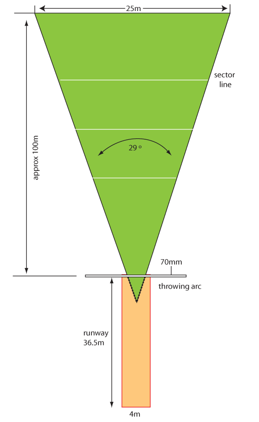

Javelin throw
The javelin throw is a field event in which athletes propel a javelin as far as possible in a designated direction. This section covers the fundamental techniques, rules, and regulations of the javelin throw, helping you to develop the necessary skills for performing the javelin throw.
Facilities and equipment for javelin throw
The facilities and equipment in the javelin throw include a throwing area, measuring tape, flags, javelin, markers, wind indicators, and score and display boards.
Throwing area
A javelin throwing area consists of a runway, throwing arc, foul line and landing sector, Figure 2.1. The runway has a length and width of 36.5 m and 4 m respectively. The landing sector has an angle of 29° from the end of the runway and a width of 25 m.
